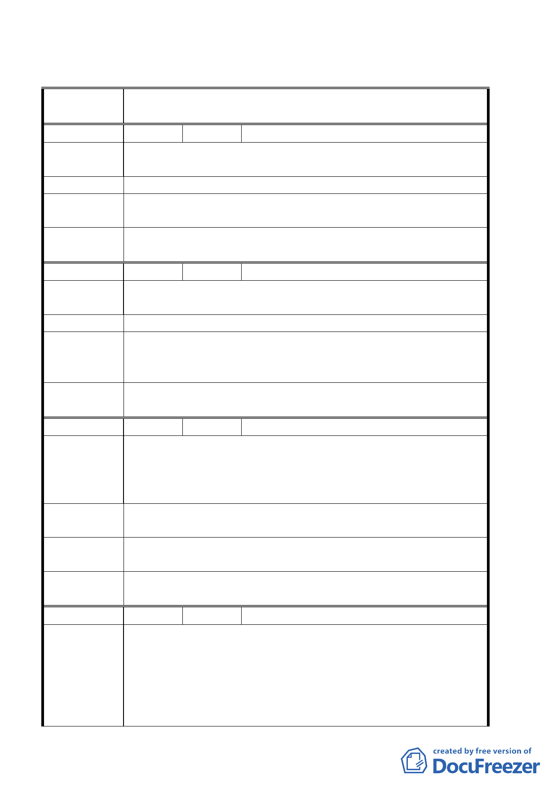

臺北市都市計畫委員會公民或團體陳所提意見綜理表
案
名
臺北市北投區都市計畫通盤檢討（細部計畫）案（關渡宮、關
渡工業區生活圈）
編
號１
陳情人 魏聰敏
陳情理由
建議理由：知行路 2 號至 90 號之區塊現為住二住宅區建請改為
住三住宅區以利房屋更新。
建 議 辦 法 建請改為住三住宅區以利房屋更新。
專 案 小 組 93.6.10 專案小組第五次審查會議：考量附近道路僅有四公尺
結 論 寬及公共設施之服務水準，建議以劃為更新地區之方式處理。
委員會議
決議
同意依專案小組審查結論辦理。
編 號 ２ 陳情人 林丁貴
陳情理由
建議理由：馬偕護校以東、大度路以南、關渡宮以北、關渡派
出所以西範圍現況墳墓能迅速遷移。
建 議 辦 法 建議改作為政府機關或住宅區使用
專案小組
結論
93.6.10 專案小組第五次審查會議：馬偕護校周邊北投第二公
墓，殯葬處已編列年度概算，俟通過後即辦理遷葬作業；另本
通盤撿討已部分變更為綠地使用。
委員會議
決議
同意依專案小組審查結論辦理。
編 號 ３ 陳情人 黃昭男
建議位置：北投區關渡段一小段 427、536、541、556、558、
陳情理由
544 地號
建議理由：上述土地位於堤防外之農業區今已數十年未能耕
作，地面上長滿水筆仔，政府規定不能破壞復耕。
建 議 辦 法 建請儘速辦理徵收，以保護土地所有權人之權益。
專 案 小 組 93.6.10 專案小組第五次審查會議：本案已有相關防洪計畫變
結 論 更為河川區，未來請養工處依水利法規定予以徵收。
委員會議
決議
同意依專案小組審查結論辦理。
編 號 ４ 陳情人 陳榮發等 29 人
建 議 位 置：（關四）、土地標示：北投區桃源段 五 小段 339、
340、342、261、344、345、 347、361、357、353、356 地號
陳情理由
中央北路沿線（桃源國中以西）。
建 議 理 由：本計劃沿線居民，皆為幾代世居農民，自台北捷
運興建至通車，皆滿懷希望與期盼，望能為地方帶來繁榮；眼
看鄰鎮竹圍地區高樓大廈林立，本區簡直無法相比。捷運通車
第 22 頁，共 49 頁